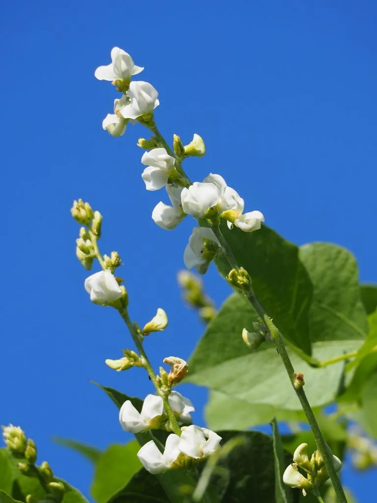

农作物与经济植物 · 植物界
扁豆 Lablab purpureus

扁豆的嫩荚扁平、种子扁圆，可炒食和煮食，耐热耐旱，是南方常见的豆类蔬菜，藤蔓还能作绿肥。
- 分类
- 门被子植物门纲双子叶植物纲目豆目科豆科属扁豆属
- 栖息环境
- 温暖地区的菜地与庭院，耐热耐旱，不耐霜冻
- 地理分布
- 原产热带亚洲与非洲，现中国、印度、东南亚等地广泛栽培
- 保护级别
- 暂无评估（栽培作物）
物种志
扁豆是一年生或多年生缠绕草本，茎蔓生、有棱，可攀援 3–5 m。三出复叶，小叶宽卵形。花蝶形，白色或紫红色，总状花序。荚果扁平、长椭圆形，长 5–10 cm，内含 3–5 粒扁圆形种子，种子有白、黑、红褐等色。根系有根瘤，能固氮。
扁豆原产热带亚洲与非洲，中国南方栽培历史悠久，北方也有种植。它喜温暖、耐热，不耐霜冻，耐旱性较强，适宜在疏松排水良好的土壤中种植，多搭架栽培。嫩荚可炒食、焖食，种子可煮粥、制豆沙，是常见的豆类蔬菜；藤蔓和叶片可作绿肥与饲料。扁豆含植物血凝素等成分，生食或未煮熟易引起中毒，必须彻底煮熟后食用。
形态与习性
- 茎缠绕，可攀援 3–5 m
- 荚果扁平，长 5–10 cm
- 种子扁圆形，白、黑、红褐等色
- 用途嫩荚炒食、种子煮食
- 注意未煮熟易中毒，必须熟透
趣味知识
- 扁豆的荚果扁平、种子扁圆，所以叫“扁豆”。
- 扁豆含植物血凝素，没煮熟吃了容易中毒，必须彻底煮熟。
- 扁豆耐热耐旱，是南方夏秋常见的豆类蔬菜。